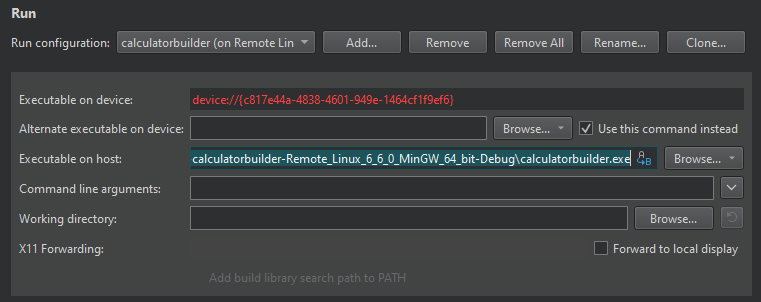

Remote Linux Run Settings
Specify run settings for the selected kit in Projects > Build & Run > Run > Run Settings.
To run and debug an application on a Linux-based device, you must create connections from the development host to the device and add the device configurations to kits. Select Manage Kits to add devices to kits. For more information, see Connecting Remote Linux Devices.
When you run the application, Qt Creator copies the files to the connected device.
The run settings display the path to the executable file on the development host and on the device. To specify that another application launches your application, for example, enter the command in the Alternate executable on device field and select the Use this command instead check box.

You can specify arguments to pass to your application in the Command line arguments field.
Select the Forward to local display check box to show a remotely running X11 client on a local display.
See also Activate kits for a project, Configure projects for running, Kits, and Connecting Remote Linux Devices.